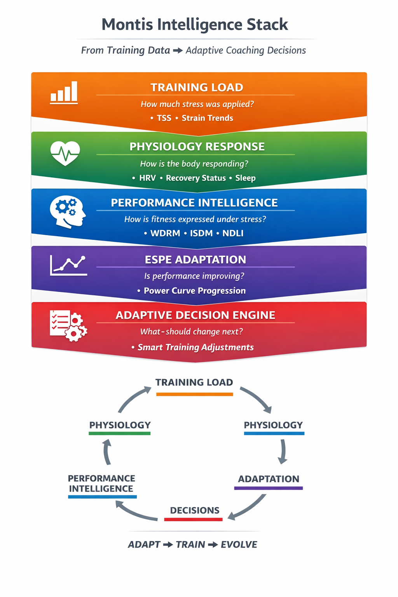

Montis.icu
Montis.icu
Montis.icu Unified Prefetch Architecture — v5.1 Design
The Montis.icu Coach App operates on an authority-driven architecture separating
measurement, interpretation, prescription,
and interface.
Data integrity originates from Intervals.icu,
computation executes in Railway (python), and conversational rendering
never alters canonical truth.
🧠 Strategy • 🟢 Technical • 🟠 Coaching • 🔵 Future
The system is intentionally divided into independent architectural layers, each with a single responsibility and defined authority.
- 🧠 Strategy & Philosophy — Governing architectural doctrine. Defines authority boundaries and non-negotiable contracts for interpretation.
- 🟢 Technical Pipeline - Operational Architecture — Deterministic data ingestion, validation, aggregation, and semantic serialization (URF v5.1). Immutable canonical outputs.
- 🟠 Coaching Intelligence Pipeline — Structural performance modelling (Tier-3), progression analysis, and deterministic adaptive prescription logic.
- 🔵 Future Technical Pipeline Architecture — Model-agnostic conversational layer using MCP tools. Renders insights without computing or mutating metrics.
This separation enforces:
- Measurement Integrity
- Transparent Decision Intelligence
- Interface Abstraction Without Authority
Conversational AI is a rendering layer — never a computational authority.
🧠 System Strategy & Architectural Philosophy
The Montis.icu Coach App is engineered around strict authority separation. No layer may override or recompute another layer’s outputs.
🔒 Core Architectural Contract
Coaching logic never mutates canonical metrics.
Tier-1 and Tier-2 outputs are immutable and remain the single source of performance truth.
- Measurement is deterministic and audited.
- Interpretation is rule-based and traceable.
- Prescription executes via a deterministic state engine.
- LLMs render outcomes but never compute, infer, or adjust metrics.
This prevents metric drift, silent recomputation, probabilistic coaching artifacts, and black-box behavior.
🧱 Responsibility Separation Model
Measurement → Technical Pipeline (Tier-0 / Tier-1 / Tier-2) Interpretation → Coaching Pipeline (Tier-3 Intelligence) Prescription → Adaptive Decision Engine (Deterministic Rules) Interface → LLM Rendering Layer (Read-Only)
No single layer owns more than one responsibility. This structure enables auditability, stateless execution, and predictable system evolution.
🎯 Strategic Positioning
Unlike heuristic AI dashboards or machine-learning coaching engines, this system does not invent, infer, or probabilistically manipulate performance metrics.
- No hidden state
- No probabilistic coaching inference
- No language-model metric computation
- No silent threshold adjustment
The result is a deterministic performance intelligence platform — not a black-box AI coach.
🔐 Identity & Token Resolution
Montis resolves athlete identity at runtime using two independent sources: stored OAuth tokens (KV) or direct bearer tokens supplied by external clients.

Bearer token present → direct execution (no KV)
Worker-managed OAuth (KV) for MCP
🔑 Separation of Concerns
- Execution access → MCP / /chat / /run_*
- Data access → OAuth token (KV or direct)
MCP grants control tool execution only.
OAuth tokens control access to athlete data.
⚙️ Unified Execution Model
Montis.icu operates a multi-entry, dual-identity execution architecture. Tool execution and athlete identity are resolved independently at runtime.
Client
→ Worker (Edge)
→ Dispatcher (Internal Tools)
→ Railway (Computation)
→ Intervals API (Data)
⚙️ Runtime Token Resolution
if (incoming_token) {
use incoming token // ChatGPT OAuth
} else {
load token from KV // Default model
}
This logic applies uniformly across:
- /run_* endpoints
- /chat/api
- /mcp
🧩 Separation of Concerns
| Concern | Mechanism |
|---|---|
| Tool Execution | MCP / Chat / Direct endpoints |
| Athlete Identity | KV OAuth or Incoming Token |
MCP grants control tool access, not athlete data.
OAuth tokens control data access, not execution.
🧠 Execution Patterns
Browser / CLI: Client → Worker → KV → Intervals MCP (Claude): LLM → MCP → Worker → KV → Intervals ChatGPT OAuth: ChatGPT → Token → Worker → Intervals
All paths converge into the same dispatcher and produce identical outputs.
⚙️ Current Operational Pipeline (Production)
Status: Live • Used in production • Backward compatible

🔄 Cloudflare handles authentication, routing, and optional synthetic testing.
🚉 Railway performs full computation, validation, and serialization.
🧩 Current Architecture Guarantees
| Area | Implementation | Guarantee |
|---|---|---|
| Prefetch Flow | Cloudflare normalizes date params and injects optional test payloads | Safe staging tests without real data |
| Execution Model | Python execution on Railway (FastAPI + Pandas) | Deterministic, audited output |
| Tier-0 Validation | Baseline column checks (`moving_time`, `distance`, etc.) | No schema drift or missing fields |
| Tier-1 Audit | Filters invalid / null activities, computes daily summaries | Enforced numeric consistency |
| Tier-2 Metrics & Enforcement | Derived Metrics, Lock totals, enforce logical consistency | No variance bleed between scopes |
| Tier-3 Coaching | Forecast, Performance Intelligence and ESPE | Integrated performance modelling |
| Serialization | Single-pass semantic JSON (no float loss) | Stable numeric precision |
| Observability | Structured logs at all Tier boundaries | Traceable audit chain (light→full→wellness) |
| Schema Version | URF v5.1 unified contracts | Cross-version compatibility with GPT tool API |
🧠 Unified Tool & LLM Architecture
| Capability | Implementation | Guarantee |
|---|---|---|
| Multi-LLM Support | MCP + Direct Tool Calls | Works across ChatGPT, Claude, Gemini |
| Dual OAuth Model | KV OAuth + Incoming Token | Flexible identity resolution |
| Execution Engine | Cloudflare Dispatcher → Railway | Single deterministic pipeline |
| Data Authority | Intervals API | Single source of truth |
| Semantic Contract | URF v5.1 | No recomputation or drift |
| Stateless Execution | No UI dependency | Fully reproducible |
⚙️ Execution Flow
Client / LLM
↓
Cloudflare Worker (Edge)
• Token Resolver (incoming > KV)
• Routing
↓
Dispatcher (Internal Tools)
↓
Railway Engine (Tier 0–3)
↓
Intervals API (Data)
↓
Semantic JSON (URF v5.1)
↓
LLM Rendering Layer (Read-only, tool-driven)
🔑 Key Properties
- Single execution path — all clients use the same dispatcher
- Dual identity resolution — KV or incoming token
- No recomputation in LLMs
- Deterministic outputs across all interfaces
⚠️ Important Clarification
- MCP controls tool access
- OAuth controls data access
- ChatGPT uses direct OAuth (no MCP)
⚙️ Future Operational Pipeline
Status: Planned • Incremental rollout • No breaking changes
🧭 System Diagram (Unified Execution Model)
┌────────────────────────────┐
│ Client / LLM / Application │
│ (ChatGPT, Claude, CLI, UI) │
└──────────────┬─────────────┘
│ Tool call (direct OR MCP)
▼
┌────────────────────────────────────┐
│ Cloudflare Worker (Edge) │
│ • Token resolution (direct / KV) │
│ • Routing + normalization │
│ • Rate limiting / policy │
└──────────────┬─────────────────────┘
│ Authenticated execution
▼
┌────────────────────────────────────┐
│ Dispatcher (Internal Execution) │
│ • Single execution path │
└──────────────┬─────────────────────┘
│
┌──────┴─────────┐
▼ ▼
┌──────────────┐ ┌──────────────────┐
│ Intervals API│ │ Railway Engine │
│ (Data Source)│ │ (Tier 0–3) │
└──────┬───────┘ └────────┬─────────┘
│ │
└────────────┬───────┘
▼
┌────────────────────────────────────┐
│ Semantic JSON (URF v5.1) │
│ • Deterministic │
│ • Context explicit │
│ • No recomputation │
└──────────────┬─────────────────────┘
▼
┌────────────────────────────────────┐
│ LLM Rendering Layer (Read-only) │
│ • Narrative only │
│ • No metric computation │
└────────────────────────────────────┘
🔄 Cloudflare handles authentication, routing, and optional synthetic testing.
🚉 Railway performs full computation, validation, and serialization.
💡Independence from LLMs via consistent execution (Railway)
🔑 Key Insights
-
There is no UI state
Every interaction is stateless, reproducible, and tool-driven. -
LLMs never compute metrics
They only interpret pre-computed, audited semantic JSON. -
OAuth tokens are handled at the edge and never exposed to LLM reasoning
Cloudflare fully isolates authentication from reasoning. -
Intervals.icu remains the single source of truth
All metrics originate from published APIs or FIT-derived data. -
Context is explicit, never inferred
Each metric declares whether it is activity, 7d, 90d, or rolling. -
The system is headless by design
It works equally well for chat, voice, automation, or background agents.
⚙️ How It Works (End-to-End)
-
User or AI issues a natural-language request
Example: “Explain my weekly intensity balance and recovery status.” -
Request is converted into a tool call (direct or MCP)
- Strongly typed inputs
- Explicit report scope (weekly / season / activity)
-
Cloudflare Edge handles trust and policy
- OAuth token exchange with Intervals.icu
- Scope validation
- Rate limiting
- Parameter normalization
-
Railway executes the computation
- Tier-0: schema + column validation
- Tier-1: numeric consistency and filtering
- Tier-2: locked totals and scope enforcement
- No cross-window leakage (e.g. weekly ≠ seasonal)
-
Canonical semantic JSON is produced
- URF v5.1 contract
- Explicit context windows
- Deterministic numeric precision
- No derived ambiguity
-
LLM renders the report
- Descriptive, coach-like language
- Anchored strictly to provided semantics
- No recomputation, guessing, or extrapolation
🧠 Why This Matters
This architecture enables natural language coaching at scale without:
- Dashboards
- Sliders
- Charts
- Hidden state
- Silent recomputation
The result is a system that is:
- Auditable
- Secure
- Model-agnostic
- Future-proof
- Genuinely conversational
Natural language becomes the interface — not the source of truth.
Every decision is rule-based, auditable, and reproducible — never guessed or generated.
🔁 Architectural Continuity
The system evolves toward a unified tool-based architecture (direct + MCP), without changing execution guarantees. It formalizes the same guarantees behind a standard tool interface.
- Same Railway execution engine
- Same Tier-0/1/2 enforcement
- Same URF v5.1 semantic contract
- Same Intervals.icu data authority
🎯 Decision Governance
- The Adaptive Decision Engine is the sole prescriptive authority.
- Tier-2 metrics provide diagnostic context.
- Tier-3 synthesizes capability state.
- LLMs never modify, override, or invent recommendations.
🧠 Montis Intelligence Stack
From raw training load to adaptive coaching decisions — a closed-loop performance system.

🧠 Coaching Intelligence Pipeline (Performance Layer)
Status: Active (v6 / ADE v2) • Rule-based • Closed-loop • Production
The Coaching Pipeline operates strictly on validated canonical data produced by the Technical Pipeline. It does not compute raw metrics. It transforms trusted semantic inputs into structured performance intelligence and executes deterministic training decisions.
Tier-3 now operates as a closed-loop system with hierarchical control: performance intelligence drives prescription, but phase governance can override execution.
CANONICAL SEMANTIC DATA (URF v5.1)
│
▼
Tier-3A: Stress Intelligence (PI)
(WDRM / ISDM / NDLI)
│
▼
Tier-3B: Progression Intelligence
ESPE v1 — Power Curve Adaptation (ACTIVE)
│
▼
Tier-3C: System Modeling
(PI + ESPE synthesis)
│
▼
ADE v2 — Adaptive Decision Engine
(Operational Layer — metrics driven)
│
▼
PHASE GOVERNANCE LAYER (Strategic Override)
(required_phase enforcement)
│
▼
COACHING SEMANTIC LAYER (v6)
│
▼
Final Structured Report
🔍 Stage 1 — Stress Intelligence (PI)
Evaluates how the athlete expresses training load under fatigue.
- WDRM — Anaerobic repeatability and W′ depletion behavior
- ISDM — Durability and fatigue resistance
- NDLI — Neural load density and intensity clustering
Answers: “Can the athlete tolerate additional stress?”
📈 Stage 2 — Progression Intelligence (ESPE v1 — Active)
Tracks energy system adaptation using deterministic power curve comparison.
- Endurance (60min trend)
- Threshold (20min trend)
- VO₂ Capacity (5min trend)
- Anaerobic Repeatability (1min + W′ behavior)
Answers: “Is current training producing adaptation?”
🧬 Stage 3 — System Modeling
Combines stress signals (PI) and progression signals (ESPE) into a unified physiological state model.
- Energy system balance
- Durability gradient
- Adaptation bias
- Plateau detection
This stage defines system capability and constraints.
🧭 Stage 4 — ADE v2 (Operational Decision Layer)
Executes rule-based training adjustments based on current physiological state.
IF: Neural density high AND Repeatability decreasing AND FatigueTrend elevated THEN: Reduce VO2 duration 15% Convert tempo → endurance Insert OFF day
This layer answers: “What can the athlete handle right now?”
🧭 Stage 5 — Phase Governance (Strategic Override Layer)
Enforces mesocycle intent over short-term optimisation.
Critical rule:
IF: required_phase != operational_state THEN: override ADE decision
This layer answers: “What should the athlete be doing now?”
- Prevents fatigue accumulation drift
- Forces recovery / taper when required
- Ends blocks when adaptation saturates
Hierarchy:
Phase (strategy) > ADE (execution)
🧠 Training State Model (ADE v2)
Operational States: load_progression stable_load absorption_required recovery_priority
These states define execution capacity, but do not override phase intent.
📦 Coaching Semantic Output (v6)
adaptive_layer: operational_state required_phase phase_alignment resolution adaptation_focus prescription_adjustment
The system supports:
- Athlete Mode — Clear directive
- Coach Mode — Full traceability
Complexity is abstracted in Athlete Mode, but fully accessible in Coach Mode. The system hides complexity — it never hides transparency.
📬 Contact
For integration, customization, or coaching inquiries, connect via GitHub link below or DM via Intervals.icu DM and contribute in Intervals.icu Forum.
github.com/revo2wheels
Built with ❤️ for endurance athletes — by Clive King.
Made in the Suisse Alps 🇨🇭.
Powered by Intervals.icu, Cloudflare and the Railway Engine.